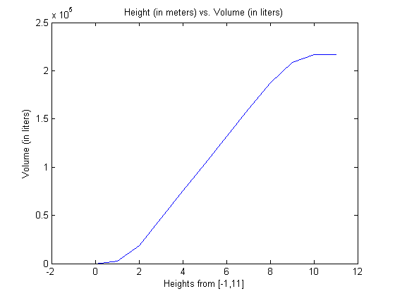

Contents
- Problem #1: Gas Tank Volume
- Function Descriptions
- Part 1B: Plotting Volumes from Current Height
- Problem #2: Parking Rates at SLC Airport
- Function Descriptions
- Part 2A: Long Term Parking
- 3 Test Cases (Long Term Parking)
- Part 2B: Short Term Parking
- 3 Test Cases (Short Term Parking)
- Part 2C: Robustness & User Input
- Part 2D: Plotting Parking Rates
% Andrew Gerst
Problem #1: Gas Tank Volume
Function Descriptions
% GasTankVolume Function % This function computes the volume of the gas tank in liters by calling % each of the individual functions based on how full the tank is and % whether or not parts of the different components (shapes) are filled and % by how much. % HemiSphereVolume Function % This function computes the volume of the top portion of the gas tank % which contains the formula for the volume of a partially filled % hemisphere. % CylinderVolume Function % This function computes the volume of the middle portion of the gas tank % which contains the formula for the volume of a cylinder depending on it's % radius and height. % ConeVolume Function % This function computes the volume of the bottom portion of the gas tank % which contains the formula for the volume of a partially filled inverted % cone.
Part 1B: Plotting Volumes from Current Height
heights = -1:11; volumes = zeros(1,length(heights)); for idx = 1:length(volumes) volumes(idx) = GasTankVolume(heights(idx)); end plot(heights,volumes); title('Height (in meters) vs. Volume (in liters)'); xlabel('Heights from [-1,11]'); ylabel('Volume (in liters)');
Problem #2: Parking Rates at SLC Airport
Function Descriptions
% LongTerm Function % This function determines the rate of long-term parking based on the % amount of days and hours. % ShortTerm Function % This function determines the rate of short-term parking based on the % amount of days, hours, and minutes. % ValidateTime Function % This function takes values for days, hours, and minutes, and translates % them into more appropriate values, or outputs an error message.
Part 2A: Long Term Parking
3 Test Cases (Long Term Parking)
% Test case 1: a stay of 27 days, 3 hours should result in an expected rate % of $192 testRate1 = LongTerm( 27, 3 ); expectedRate1 = 192; if (testRate1 ~= expectedRate1) error('Error: computed rate didn''t match expected rate'); end % Test case 2: a stay of 27 days, 3 hours should result in an expected rate % of $192 testRate2 = LongTerm( 27, 3 ); expectedRate2 = 192; if (testRate2 ~= expectedRate2) error('Error: computed rate didn''t match expected rate'); end % Test case 3: a stay of 27 days, 3 hours should result in an expected rate % of $192 testRate3 = LongTerm( 27, 3 ); expectedRate3 = 192; if (testRate3 ~= expectedRate3) error('Error: computed rate didn''t match expected rate'); end
Error using ==> Assignment4 at 72 Error: computed rate didn't match expected rate
Part 2B: Short Term Parking
3 Test Cases (Short Term Parking)
% Test case 1: a stay of 27 days, 3 hours, 20 minutes should result in an % expected rate of $192 testRate1 = LongTerm( 27, 3, 20 ); expectedRate1 = 192; if (testRate1 ~= expectedRate1) error('Error: computed rate didn''t match expected rate'); end % Test case 2: a stay of 27 days, 3 hours, 20 minutes should result in an % expected rate of $192 testRate2 = LongTerm( 27, 3, 20 ); expectedRate2 = 192; if (testRate2 ~= expectedRate2) error('Error: computed rate didn''t match expected rate'); end % Test case 3: a stay of 27 days, 3 hours, 20 minutes should result in an % expected rate of $192 testRate3 = LongTerm( 27, 3, 20 ); expectedRate3 = 192; if (testRate3 ~= expectedRate3) error('Error: computed rate didn''t match expected rate'); end
Part 2C: Robustness & User Input
Part 2D: Plotting Parking Rates
% Assume time is a 3 x 1536 matrix: [days; hours; minutes] rates = zeros( 2, length( time ) ); for idx = 1:length( time ) days = time( 1, idx ); hours = time( 2, idx ); minutes = time( 3, idx ); rates( 1, idx ) = ShortTerm( days, hours, minutes ); rates( 2, idx ) = LongTerm( days, hours + minutes/60); end % Plot Rates